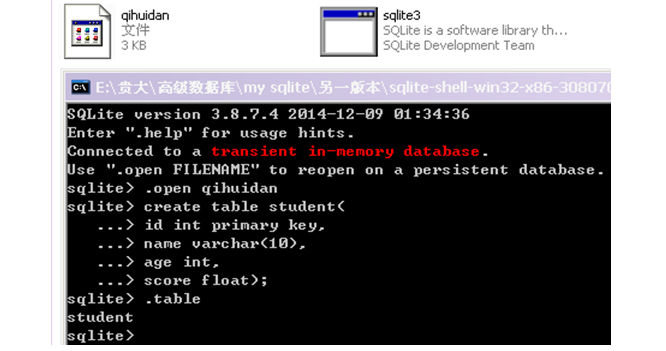

在SQLite3下查询数据
在分析select.c之前，先说明怎样在sqlite3下对表和数据进行查询。数据库中有数据才能查询，所有我们要先建立数据库和表。
首先，启动sqlite3.exe，创建一个数据库，创建一个新数据库和打开一个已经存在的数据库命令是一样的，如果文件在当前目录下不存在，则新建；如果存在，则打开，命令为：.open 数据库名。例如；创建一个名为qihuidan的数据库，输入命令行：.open qihuidan，如图2.1所示。
 图2.1 创建、打开数据库
图2.1 创建、打开数据库
在这个打开的数据库qihuidan下创建一个student表，然后使用.table命令查看是否成分创建了student表，执行.table命令，显示student表。具体代码如图2.2所示。

图2.2创建stuent表
在student表中插入数据，然后使用select命令查询插入的数据。具体代码及执行情况如图2.3所示。
 图2.3插入和查询数据
图2.3插入和查询数据
从图2.3所示，查询显示的内容没有列名，会让人分不清各列数据具体指的是什么。使用.header on命令显示出列名，使用.mode column命令会把列名与具体数据用下划线隔开。如图2.4所示 。
 图2.4 使用.header on和.mode column命令
图2.4 使用.header on和.mode column命令
下面进行数据的模糊查询。如图2.5所示。
 图2.5 数据模糊查询
图2.5 数据模糊查询
查询student表结构，如图2.6所示。
 图2.6 查询student表结构
图2.6 查询student表结构
使用select命令查询数据，具体是怎么实现的？分析select.c可以获得答案。